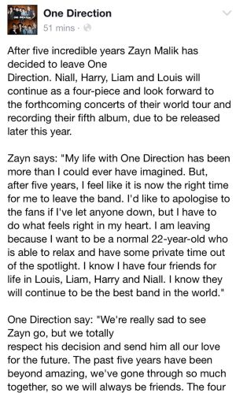

One Direction
La boyband más grande de la historia
Inicios de One Direction
La formación de la banda comenzó cuando los cinco integrantes hicieron sus audiciones y fueron expulsados de la competencia “The X Factor”. Tras este acontecimiento, Nicole Scherzinger, una de las juezas del programa de televisión, sugirió que los cinco intérpretes formaran parte de un grupo, al que finalmente llamaron One Direction. Posteriormente, el grupo se reunió durante dos semanas para llegar a conocerse entre sí y con la práctica. Styles sugirió el nombre de One Direction. La primera canción como grupo fue una versión acústica de "Torn" de Natalie Imbruglia. Cowell comentó más adelante que su actuación le convenció de que "estaban seguros, diversión, como una pandilla de amigos”. Dentro de las primeras cuatro semanas de los shows en vivo, fueron ganando popularidad en el Reino Unido. One Direction terminó en tercer lugar e inmediatamente después de la final, su canción "Forever Young", que habría sido lanzada si hubieran ganado Factor X, se filtró en Internet. Poco después se confirmó que habían firmado con Cowell un contrato discográfico de 2 millones de euros con Syco Records."
Trayectoria y legado
Tras el lanzamiento de su primer sencillo titulado "What Makes You Beautiful", la banda logró debutar en el puesto número uno de las principales listas del Reino Unido e Irlanda. Debido a su gran debut, recibieron varios reconocimientos, entre ellos: Brit Award al mejor sencillo británico, tres MTV Video Music Awards al mejor artista nuevo, mejor vídeo pop y vídeo más digno de compartir".
Tiempo más tarde lograron gracias a tres nuevos sencillos que su éxito se expandiera por Europa y Oceanía. El álbum que posee todos estos sencillos, Up All Night, logró debutar en la posición número uno del Billboard 200, y además convirtió a la banda británica en el primer grupo que alcanza el número uno con su primer disco en la historia de la lista.
Gracias al mismo debut en el puesto número uno que obtuvo el segundo álbum musical de One Direction, lograron mantener su éxito y fueron catalogados como el primer grupo masculino y segundo en general que logra alcanzar dicho puesto con sus dos primeros discos.
Para promocionar Up All Night, One Direction se embarcó en el Up All Night Tour, con el que dieron distintos conciertos en Europa, Oceanía y América. En el 2012, su éxito se mantuvo con el lanzamiento de Take Me Home, su segundo álbum. Al igual que su predecesor, debutó en el primer puesto del Billboard 200 e hizo a One Direction el primer grupo masculino y segundo en general que logra alcanzar dicho puesto con sus dos primeros discos, detrás de Danity Kane.
También logró el número uno en el Reino Unido, por lo que es su primer disco que lo logra. El primer sencillo, "Live While We're Young", tuvo una recepción comercial superior a la de "What Makes You Beautiful", ya que se ubicó entre los diez más vendidos en la mayoría de las listas musicales, más concretamente, en Nueva Zelanda se convirtió en el primer número uno del quinteto.
Más tarde, en 2013, lanzaron su tercer álbum Midnight Memories, el cual se convirtió en el más vendido de ese año, con casi cinco millones de unidades vendidas. De este disco, fueron seleccionados los sencillos Best Song Ever, Story of My Life, Midnight Memories y You and I, los cuales entraron a varios conteos de todo el mundo. La gira correspondiente del disco, Where We Are Tour, se convirtió en una de las más exitosas de la historia, con una recaudación de casi 300 millones de dólares y una asistencia de tres millones y medio de personas.
Su cuarto álbum, Four, incluyó los sencillos Steal My Girl y Night Changes. Durante 2014 y gran parte del 2015 promocionaron su álbum con el On The Road Again Tour, que contó con grupos como McBusted y 5 Seconds of Summer como teloneros.
El 31 de julio de 2015, el grupo lanzó "Drag Me Down" sin material de promoción o anuncio previo. El single es el primer sencillo de su quinto álbum de estudio, Made In The A.M., y el primer material publicado por el grupo después de la salida de Malik. Después del lanzamiento, se reveló que el grupo entrará en hiatus en 2016 para tomar un descanso y seguir proyectos en solitario. El 22 de septiembre, el título del quinto álbum de estudio, Made In The A.M., se anunció oficialmente junto con la promoción del single "Infinity". El grupo comenzó a revelar los nombres de las pistas en sus historias de Snapchat a las que se confirmó más tarde en iTunes. El álbum está previsto para ser publicado el 13 de noviembre.
La salida de Zayn de One Direction
En marzo de 2015, en plena gira, Zayn Malik anunció su marcha de One Direction, mientras el resto del grupo seguiría adelante con la gira y la grabación de su quinto álbum.
El comunicado publicado en la página de Facebook de la banda decía lo siguiente: "Mi vida con One Direction ha sido más de lo que yo nunca me hubiera podido imaginar. Pero, después de cinco años, siento que es el tiempo correcto para que deje la banda. Me gustaría disculparme de los fans si he decepcionado a alguien, pero tengo que hacer lo que se siente bien en mi corazón. Me voy porque quiero ser una persona normal de 22 años que se pueda relajar y tener tiempo privado fuera de la luz pública. Sé que tengo cuatro amigos por vida en Louis, Liam, Harry y Niall. Yo sé que ellos continuaran a ser la mejor banda del mundo".
Sus logros incluyen cinco Brit Awards, cuatro MTV Video Music Awards, once MTV Europe Music Awards, y los diecinueve Teen Choice Awards de cada diecinueve nominaciones, entre muchos otros. Según Nick Gatfield, presidente y director ejecutivo de Sony Music Entertainment UK, One Direction representaba un imperio de negocios de 50 millones de dólares para junio de 2012. En 2014, Forbes les sitúa en el segundo puesto de los más altos ingresos de celebridades menores de 30 años, con el grupo ganando un estimado de 75 millones de dólares desde junio de 2013 hasta junio de 2014.
Después del lanzamiento de Four, se convirtieron en la primera banda en la historia de EE.UU. de tener cuatro álbumes debutando en en el número uno de la lista Billboard 200. Su tercer álbum, Midnight Memories, fue el disco más vendido en todo el mundo de 2013 a pesar de ser lanzado a finales de noviembre.
La agrupación entrará temporalmente en pausa a partir de marzo de 2016, luego de la promoción del álbum Made In The A.M., que saldrá en noviembre de 2015. El descanso viene tras 4 años de giras y han declarado que el tiempo será invertido en proyectos personales y profesionales.
Para ver la triste noticia, hacer click aqui aquí.
One Direction se toma un descanso
En noviembre 2015, Harry Styles, Liam Payne , Niall Horan y Louis Tomlinson anunciaron que One Direction tomaría una pausa después de cinco años de cinco álbumes y cuatro giras mundiales. El anuncio lo hicieron meses después de que Zayn Malik dejara la banda.
Esa pausa de la banda nunca fue el final. Uno de los motivos fue que los cuatro integrantes necesitaban un descanso debido a sus agotadores horarios. De hecho, en 2014 ya era un tema que se discutía entre los integrantes.
Harry Styles en 2017, comentó a la revista Rolling Stone que “no quería agotar también a sus seguidores” “Si eres ‘ciego’, puedes pensar: Sigamos de gira. Pero todos pensamos en el grupo como para dejar que eso suceda [la pausa]. Te das cuenta que estás exhausto y no quieres agotar la creencia de las personas en ti”, agregó.
Si bien, los chicos no descartaban la idea de volver luego del descanso, cada uno estaba interesado en forjar sus propias carreras en solitario.

Para ver su ultimo video, hacer click aqui aquí.